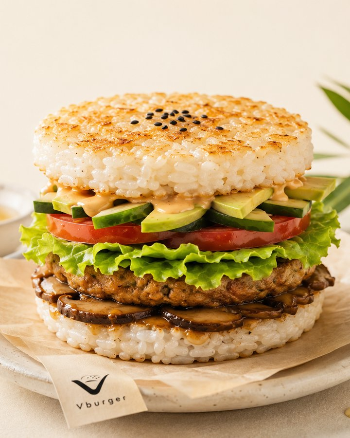
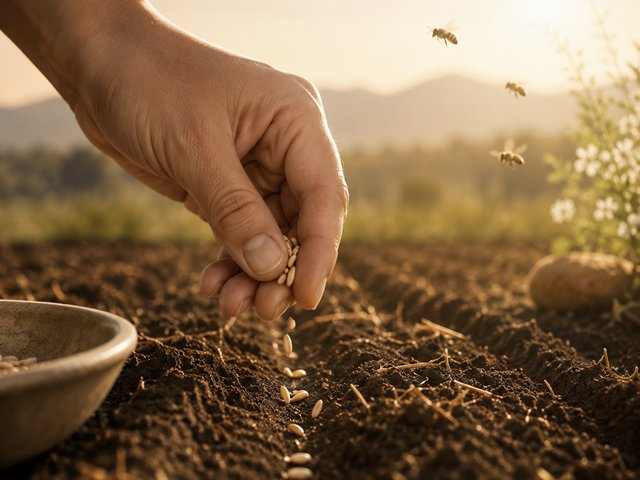
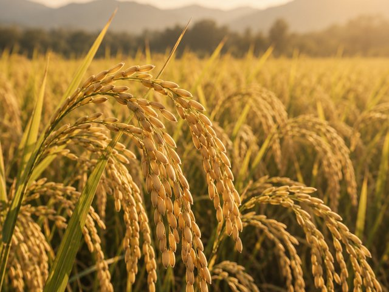
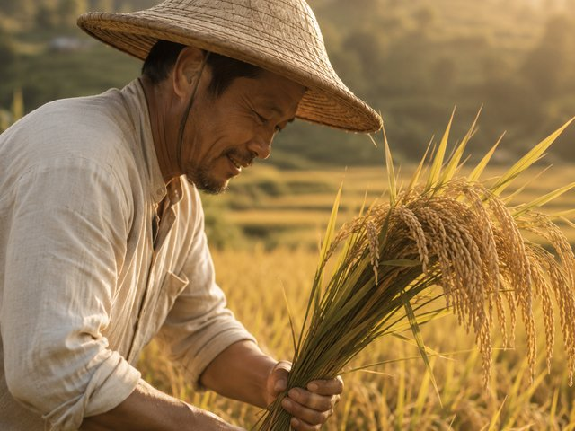
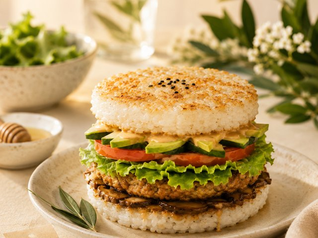
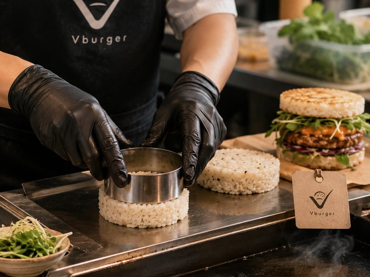
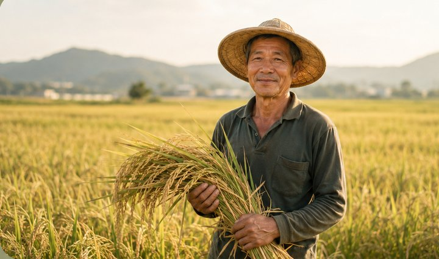
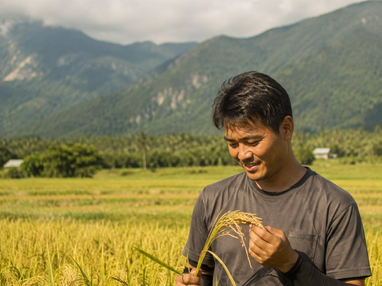

從一粒米開始，重新想像漢堡。
Vburger 是台灣的無麩質米漢堡品牌，用台灣在地米食取代傳統小麥漢堡包，並以蔬菜、友善農業與永續理念貫穿整份餐點設計。
重點摘要
- 品牌定位：Vburger 是源自台灣台中豐原的無麩質米漢堡品牌。
- 名稱由來：「V」代表 Vegetable（蔬菜），同時呼應 Victory 與 Vitality。
- 核心作法：以台灣米蒸煮壓製成漢堡包，不使用小麥麵粉與含麩質黏著劑。
- 供應來源：稻米來自合作的米米農場，由農友阿米以友善耕作方式種植。
- 品牌標語：一口米香，種下更好的未來。
品牌名稱「Vburger」中的「V」代表 Vegetable（蔬菜），也呼應 Victory 與 Vitality 的精神；Logo 同時結合米粒、漢堡輪廓與蜜蜂三個元素，分別象徵台灣農業、飲食產品本身，以及授粉、生態循環與永續農業。

漢堡，能不能更健康，也對土地更友善？
Vburger 的誕生，來自一個簡單的想法：漢堡，能不能更健康，也能對土地更友善？我們以 Vegetable 的「V」作為品牌起點，將台灣米、天然蔬菜、無麩質飲食與永續農業融入每一份漢堡。
Logo 中的一粒粒米，代表土地孕育出的食物；蜜蜂代表授粉、生態循環，以及農作物持續生長的力量。我們相信，每一次飲食選擇，都能成為改變環境的一小步。
從農田到餐桌，從一粒米到一個漢堡，Vburger 希望讓健康、美味與永續，不再需要做選擇。
品牌速覽
- 品牌名稱
- Vburger（V = Vegetable）
- 品牌類型
- 無麩質米漢堡・蔬食餐飲
- 發源地
- 台灣・台中豐原
- 核心食材
- 台灣米・在地蔬菜・友善農產品
- 品牌標語
- Better Food. Better Farming. Better Future.
- 經營方向
- 直營概念店＋開放加盟合作
一個標誌，四個共同生長的意義。
從土地，到您的每一口。
每一份 Vburger 米漢堡，都從一粒台灣稻米開始。以下是它抵達餐桌前，走過的四個階段。




友善農業
與重視土地健康的農民合作，減少化學投入。
在地農作
優先選用台灣本地種植的米與蔬菜。
天然食材
保留食材原始風味，減少不必要的加工。
健康料理
以無麩質及蔬食為核心設計每一份餐點。
Vburger
將健康、美味與永續，交到您手上的一份漢堡。
永續消費
每一次選擇，都是支持土地循環的一小步。
米漢堡包的研發歷程
用米做出「能拿在手上、不散開、又保有米飯口感」的漢堡包，是 Vburger 最花時間的一道難題。以下是我們實際走過的開發階段。
選米：找出適合成形的品種與含水量
不同品種的台灣米，直鏈澱粉比例不同，直接影響米飯壓製後的黏性與支撐力。我們從煮飯的水量、浸泡時間到冷卻溫度逐一調整，尋找既能成形、口感又不過於紮實的平衡點。
成形：不靠麵粉與黏著劑的結構挑戰
一般漢堡包靠麵筋提供結構，米漢堡沒有麩質可用。我們透過壓製的力道、厚度與靜置時間，讓米粒之間自然產生足夠的附著力，維持無麩質原則的同時撐住整份漢堡的重量。
煎烤：找出米香與焦香的臨界點
表面煎烤能帶出米的香氣與微焦口感，但過頭會讓米漢堡包變硬、失去彈性。火候與時間的拿捏，是讓米漢堡「像漢堡、又保有米飯本質」的關鍵。
配方：讓蔬食與米飯互相成就
米飯的味道相對溫和，內餡若太搶戲會失衡。我們以香菇、季節蔬菜與植物蛋白為主軸反覆試味，讓每一層的風味與濕度都能與米漢堡包搭配得宜。

合作農夫故事
Vburger 的米，來自實際合作的農友與農場。我們相信一份米漢堡的品質，從稻田裡就已經決定。

米米農場
米米農場以友善耕作種植稻米，重視土地健康與自然節奏。
農友阿米相信，好的米來自好的土地。Vburger 與阿米合作，把安心稻米做成每一份米漢堡。
